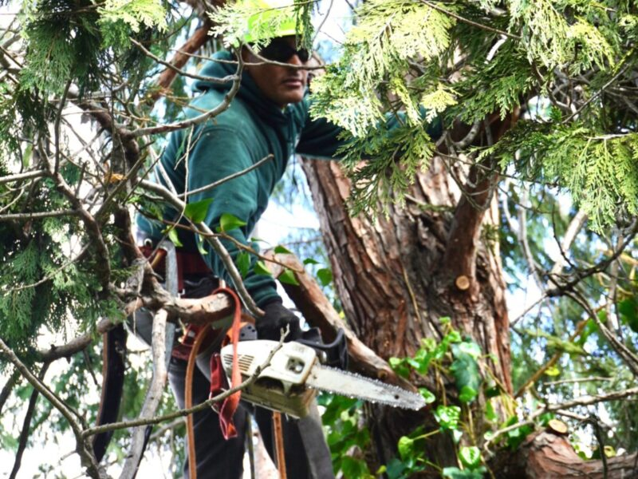
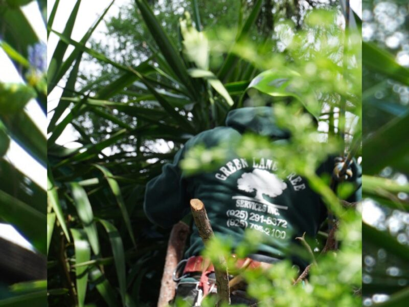

Service area
Brentwood-based tree service across Contra Costa County.
Green Lane serves Brentwood and communities throughout Contra Costa County. Call with your address and project details to confirm scheduling for your location.

Communities served
Local service from Brentwood to central Contra Costa.
Green Lane’s public service area includes the communities below. If your property is nearby but not listed, call or text to ask about availability.
BrentwoodAntiochPittsburgBay PointClaytonConcordPachecoPleasant HillWalnut CreekLafayetteOrindaMoragaAlamo


When you contact us
Include the property location.
Send the address or nearest cross streets along with the type of work and photos of the tree. This helps Green Lane confirm the service area and understand the project before the estimate.
Check availability
Need tree work in your neighborhood?
Call Green Lane with your location and the service you need.